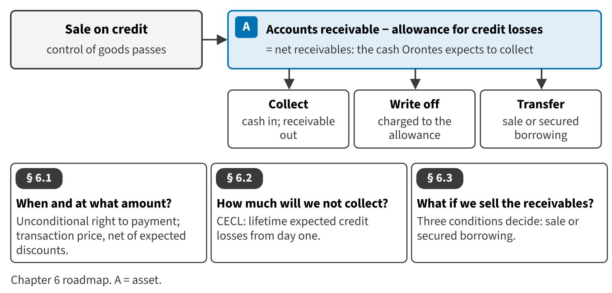

Part I · Foundations and the four financial statements · Chapter 6
Receivables: Credit Losses and Transfers
الذمم المدينة: الخسائر الائتمانية وتحويل الذمم
When a company sells on credit, it gives its customers time to pay. The promise to pay is an asset: a receivable. But not every customer will pay. In this chapter you learn when to record a receivable and how to estimate the part that will not be collected. You also learn what happens when a company sells its receivables to raise cash quickly.

Start here
Then
What this chapter is tested on
| LOS | Official statement (ICMA, 2024) | In plain words | Depth here |
|---|---|---|---|
| A.2.a | identify issues related to the valuation of accounts receivable, including timing of recognition and estimation of the allowance for credit losses | Explain when a receivable is recognized, how it is measured, and how the allowance for credit losses is estimated under CECL. | Full treatment |
| A.2.b | distinguish between receivables sold (factoring) on a with-recourse basis and those sold on a without-recourse basis, and determine the effect on the balance sheet | Distinguish a sale of receivables from a secured borrowing, with and without recourse, and show the effect on the balance sheet. | Full treatment |
| A.2.ff | identify and describe the following differences between U.S. GAAP and IFRS: (i) expense recognition, with respect to share-based payments and employee benefits; (ii) intangible assets, with respect to development costs and revaluation; (iii) inventories, with respect to costing methods, valuation, and write-downs (e.g., LIFO); (iv) leases, with respect to lessee operating and finance leases; (v) long-lived assets, with respect to revaluation, depreciation, and capitalization of borrowing costs; and (vi) impairment of assets, with respect to determination, calculation, and reversal of loss | State the IFRS 9 differences for credit losses and derecognition. | Preview (full in Chapter 17) |
The official statements are quoted from the ICMA Learning Outcome Statements (effective September 1, 2024). The plain-words column restates them in simpler English. The exam may test any outcome up to Level C.
What you already know
You know the allowance for doubtful accounts from your earlier studies. U.S. GAAP now calls it the allowance for credit losses. Since CECL, it must cover all the losses the company expects over the life of its receivables, not only losses that have already happened. If you know IFRS 9, the simplified approach for trade receivables is very close to CECL.
The 9 key terms
Every scene has Check Answers and Try Again. Try Again reshuffles rather than revealing. When you are wrong, the first thing you read is the reason for the option you chose, taken from the book's own explanations. Progress is saved in this browser.